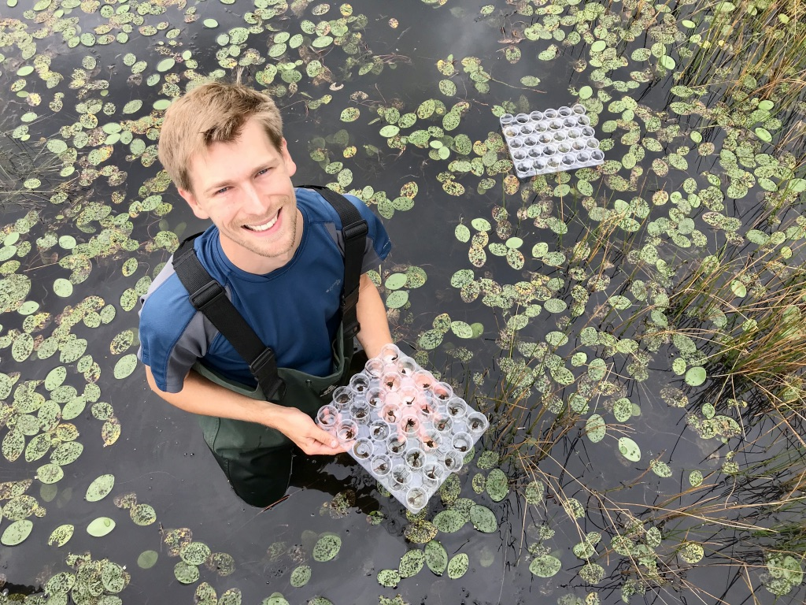
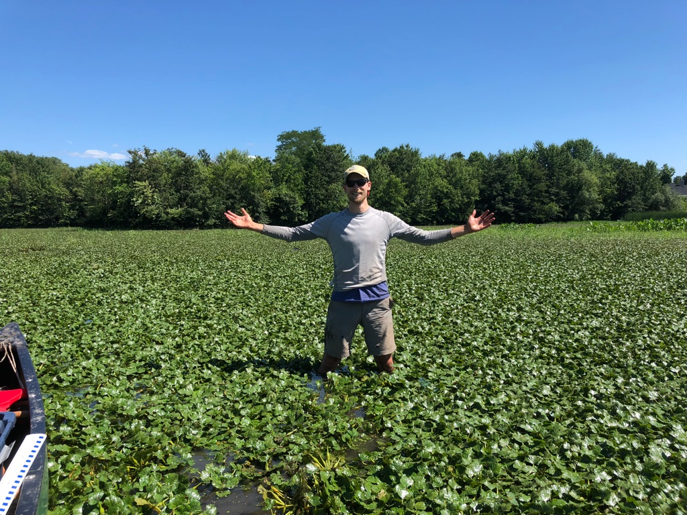

Biological Control of Water Chestnut
Water chestnut (Trapa natans) is an introduced aquatic plant in North America targeted with management due to its capacity to dominate water surfaces and transform freshwater habitats. Limited success controlling the plant with mechanical and chemical methods prompted the search for natural enemies of the plant, which identified the leaf-feeding beetle Galerucella birmanica as a highly damaging insect herbivore. In 2016, G. birmanica was collected from water chesntut plants in China and transported to a specialized lab facility at Cornell, where I have been maintaining the colony ever since. In that time, we have researching the life history and host-specificity of the insect and investigating its potential interactions with other insect species to inform decisions regarding the safety and efficacy of the biological control program.
Oxygen and nitrogen dynamics in water chesnut beds
Monitoring three freshwater habitats upstream of, within, and downstream of water chesntut infestations throughout the growing season, we document large and persistent changes to water column oxygen and nitrogen dynamics associated with Trapa. For oxygen, concentrations in water chesntut dominated areas are hypoxic (<2 mg/L), a threshold that can have negative consequences for sensitive species. For nitrogen, we find large reductions of inorganic N within the water column. To explain the loss of inorganic nitrogen, we conducted denitrification experiments looking at the accumulation of N2 gas dissolved within the water column. We find higher concentrations of N2 in water chestnut invaded waters, but did not document significant differences in rates of N2 accumulation between sites with and without water chestnut. We conclude that denitrification dynamics are affected by Trapa, but fail to document the mechanism in our experiments, which only included site water and sediment. We speculate that biofilms that grow in direct association with the plant, may play a role in tranformation of nitrogen within Trapa beds.
Societal attitudes towards invasive species management
Invasive species management is controversial, but the root causes of social conflict are often unclear. Management decisions are often made with little information about biological outcomes, and even less about the social acceptability of the proposed management action, which may vary according to the specifics of the management plan or whose opinion is asked. Because invasive species management is frequently conducted with public resources for the benefit of all society, members of the public are key stakeholders whose opinions can shape the legitimacy and effectiveness of management programs. To better understand the factors that shape the social acceptability of management scenarios, we conducted an online study of a representative sample of the US public using experimental vignettes - short and realistic hypothetical scenarios describing invasive species management actions. In each vignette, we systematically manipulated four factors: 1.) taxon of the targeted organism 2.) type of control strategy 3.) level of risk associated with management and 4.) whether risk is to native species or human wellbeing. We measured the extent to which respondents believed the management action in each vignette is acceptable. Our results highlight the complexity of public attitudes toward invasive species management, which are shaped not just by management process, but also by the characteristics of people and the interactions between demographic identity and management conditions. All experimental factors are involved in significant interactions, but only control method is a significant main effect. Acceptance of management is strongly influenced by risk level, but the level of acceptance varies significantly based on gender, Hispanic-identity, political identity, childhood landscape, and land ownership. The results of this study (currently being interpreted) will help de-mystify social conflict over invasive species management and provide information that natural resource managers could combine with ecological risk assessments to inform more ecologically and socially responsible management decisions.
 